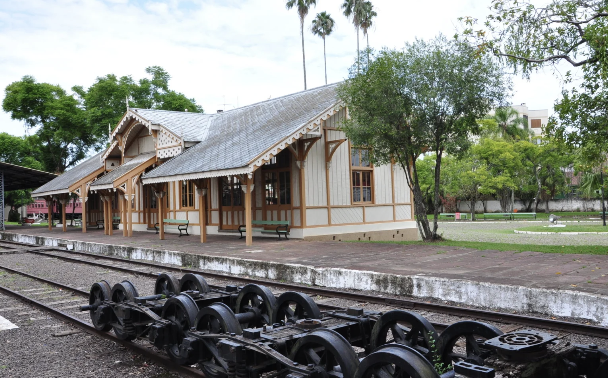
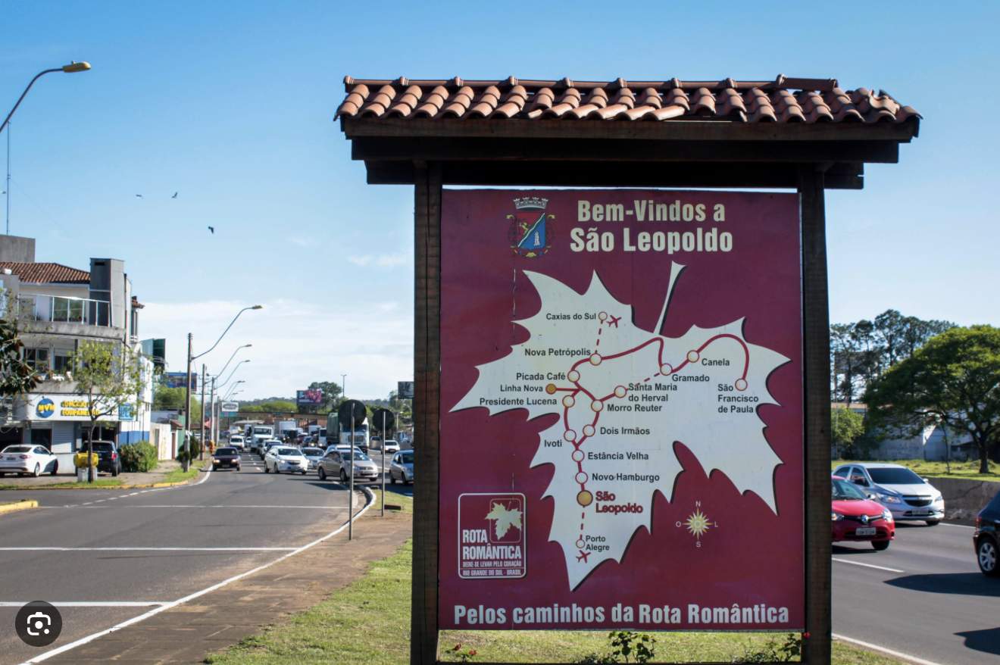
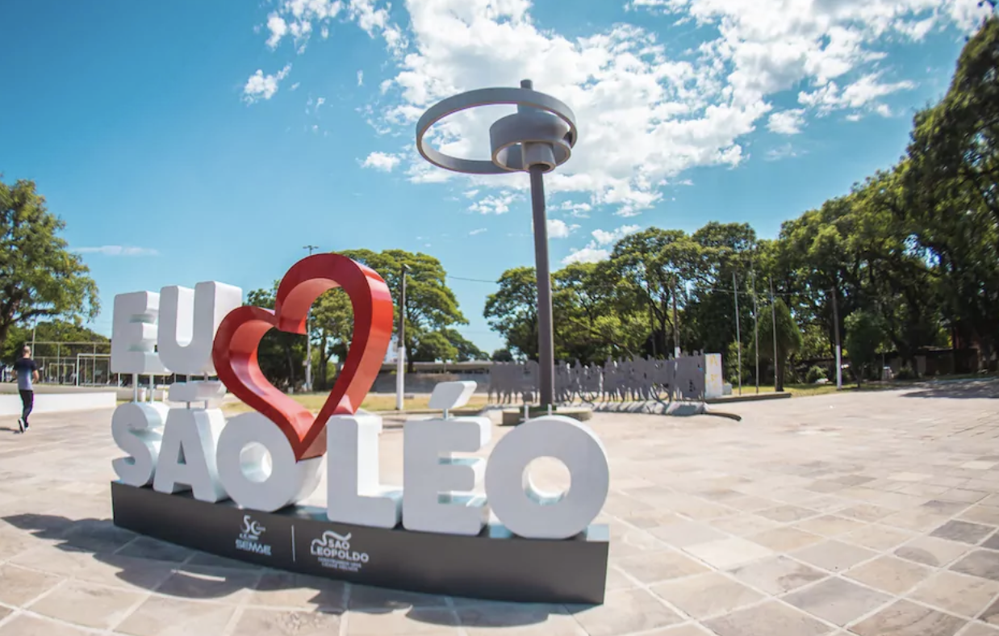
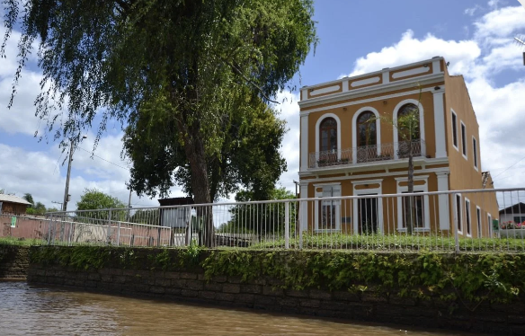
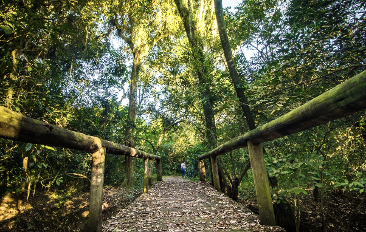
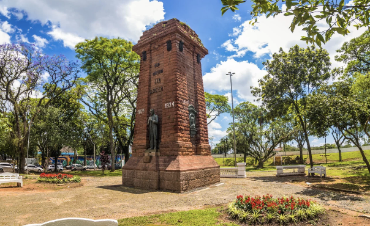

Ferrovia

Museu do Trem
Na antiga estação férrea, resgata a construção da estrada de ferro que ligou a Capital à região de São Leopoldo.
Saiba mais →Um retrato em números de São Leopoldo — imigração, economia, indústria, inovação e conhecimento — alimentado por fontes oficiais e curado pela Secretaria de Desenvolvimento Econômico.


Em 25 de julho de 1824, 39 imigrantes de língua alemã desembarcaram na Real Feitoria do Linho Cânhamo — hoje o bairro Feitoria. Nascia a Colônia Alemã de São Leopoldo, oficializada como Berço da Colonização Alemã no Brasil pela Lei Federal 12.394/2011. Em 2024, a cidade celebrou o Bicentenário da imigração.
São Leopoldo guarda o Marco Zero da colonização alemã em solo gaúcho — um patrimônio que hoje é motor de turismo, cultura e economia criativa.
Cerca de 33 mil empresas ativas, PIB entre os maiores do estado e uma base ancorada em serviços e indústria. São Leopoldo é a 6ª maior economia do Rio Grande do Sul.
São Leopoldo combina um forte setor de serviços com um dos parques industriais mais tradicionais da Região Metropolitana — do metal-mecânico ao calçadista.
Da STIHL — primeira fábrica do grupo alemão fora da Alemanha — à Taurus, São Leopoldo abriga distritos industriais que produzem motosserras, armas, autopeças e máquinas. A cidade integra o maior polo calçadista do Brasil.
O distrito reúne empresas de todos os portes produzindo motosserras, ferramentas, autopeças, armas, equipamentos agrícolas, bombas hidráulicas e fornos — a força maior está no metal-mecânico.
A base industrial dá a São Leopoldo uma economia exportadora e diversificada: máquinas, autopeças e armamentos abastecem mercados de dezenas de países. A tradição calçadista do Vale do Rio dos Sinos — que concentra quase metade da produção de calçados do RS — complementa o metal-mecânico e sustenta uma densa cadeia de fornecedores e serviços.
Próxima camada de dados (automatizável): produção física industrial (PIM/IBGE) e emprego industrial por CNAE (RAIS/CAGED).
O Tecnosinos, dentro do campus da UNISINOS, é um dos parques tecnológicos mais consolidados do Brasil: reúne quase 100 empresas de TI, semicondutores, automação, saúde e energia, articuladas pela Unitec.
Cultura de inovação, eventos e imersões no ecossistema.
Prototipagem e modelo de negócio · programas +Startups.
Unitec — pré-incubação e incubação de base tecnológica.
Instalação no Tecnosinos · Unitec 1 a 4.
Internacionalização · Softlanding e Take Off · South Summit.
A UNISINOS reúne mais de 31 mil estudantes num dos maiores campi universitários do país — a maior universidade em área do estado, base acadêmica que abastece o Tecnosinos e o ecossistema de inovação.
A presença de +31 mil estudantes e de milhares de servidores faz do ensino superior um dos principais motores econômicos de São Leopoldo: moradia, alimentação, serviços, transporte e uma forte cadeia de inovação ligada ao Tecnosinos. O desafio estratégico é reter os talentos formados na cidade.
Saldo positivo de admissões e uma base de empregadores ancorada na indústria, no comércio e nos serviços. Fonte automatizável: Novo CAGED/MTE (mensal).
São Leopoldo é uma cidade industrial, universitária e de serviços: entre os maiores empregadores estão a STIHL (~3,4 mil funcionários), a UNISINOS (+2 mil docentes e técnicos), a Prefeitura, o Hospital Centenário e o comércio varejista. No setor privado, o metal-mecânico e o calçadista lideram a geração de emprego industrial. Valores de referência — os números diretos virão da RAIS/CAGED (MTE).
São Leopoldo exporta sobretudo máquinas não elétricas e armas e munições, com destino a dezenas de países. Fonte automatizável: MDIC Comex Stat (mensal).
O Hospital Centenário, 100% SUS, é referência para os vales dos Sinos e do Caí e para a Região Metropolitana — mais de 1 milhão de pessoas atendidas.
São Leopoldo encerrou 2024 com 17 homicídios — oito a menos que em 2023 — e 2025 registrou o menor número da década, com taxa 33% abaixo da média do RS. Fonte: SSP-RS.
São Leopoldo tem cerca de 140,7 mil veículos emplacados — sinal de renda, consumo e de uma cidade que "funciona na prática". Fontes: DetranRS / SENATRAN.
Próxima camada de dados (automatizável): emplacamentos mensais de veículos novos (Fenabrave / DetranRS) e frota tributável de IPVA (Sefaz-RS), que permitirão acompanhar o mercado e a arrecadação mês a mês.
São Leopoldo combina turismo histórico, religioso e cultural: a Casa do Imigrante, o Marco Zero da Rota Romântica, museus e o legado do Bicentenário atraem visitantes o ano todo.

Na antiga estação férrea, resgata a construção da estrada de ferro que ligou a Capital à região de São Leopoldo.
Saiba mais →
Casarão de 1863, antigo Cais do Porto da família Blauth. Conta a história do rio e abriga o Memorial Henrique Prieto.
Saiba mais →
694 hectares de mata e o Banhado da Imperatriz. Trilhas e natureza preservada no coração da cidade.
Saiba mais →
A praça mais antiga do município. O monumento foi erguido em 1924, no centenário da imigração alemã.
Saiba mais →São Leopoldo é o ponto inicial da Rota Romântica, roteiro que sobe a serra pelas cidades de colonização alemã.
Saiba mais →Monumento contemporâneo em praça revitalizada — ponto de encontro e um dos cartões-postais atuais da cidade.
Saiba mais →São Leopoldo integra o roteiro do Vale Germânico e a Rota Romântica, com museus, patrimônio da imigração e o Parque Natural da Imperatriz. Próxima camada de dados (a consolidar): fluxo de visitantes, ocupação hoteleira e empregos formais no turismo.
Se o turismo mostra quem visita a cidade, a cultura mostra o que São Leopoldo preserva, produz e celebra — do patrimônio da imigração aos museus e festivais.
Em São Leopoldo, cultura e turismo se retroalimentam: o roteiro histórico vive da Casa do Imigrante, do Marco Zero e dos museus, enquanto festivais e a herança germânica trazem público à cidade. A cidade preserva e produz cultura, e é isso que sustenta o turismo de identidade.
Próxima camada de dados (anual): equipamentos culturais, fomento (Lei Paulo Gustavo / PNAB-Aldir Blanc) e empresas de CNAE cultural por bairro.
Edite os indicadores e as séries dos gráficos. As alterações aparecem no site logo após salvar (pode ser necessário recarregar a página).